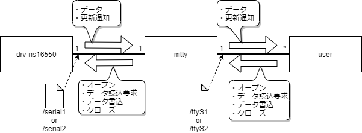

概要
mvfs
仮想ファイルサーバ。ファイルシステムインタフェースを提供する。
drv-ns16550
NS16550ドライバ。デバイスファイルによるシリアルポートのデータ送受信機能を提供する。
mttyはmvfsを用いてdrv-ns16550およびユーザプロセスとインタフェースを持ち、drv-ns16550の機能を使ってユーザプロセスにターミナル入出力機能を提供する。
機能モデル図を下記に示す。

mttyはデバイスファイルをオープンして各種デバイスと接続し、データを読み込み、バッファリングするのと同時にエコーする。 また、ユーザプロセスからの書き込みデータがバッファリングされていれば、データ書き込みを行う。
一方で、ユーザプロセスにttyファイルを提供し、データ読込要求が来た時にデバイスファイルから読み込んでバッファリングしたデータがある場合はそのデータを返し、データ書き込みが行われた時はそれをバッファリングしてデバイスファイルに書き込む。
各種デバイスファイルとttyファイルの対応を下記に示す。
| デバイスファイル | ttyファイル |
| /serial1 | /ttyS1 |
| /serial2 | /ttyS2 |
-- TBD --